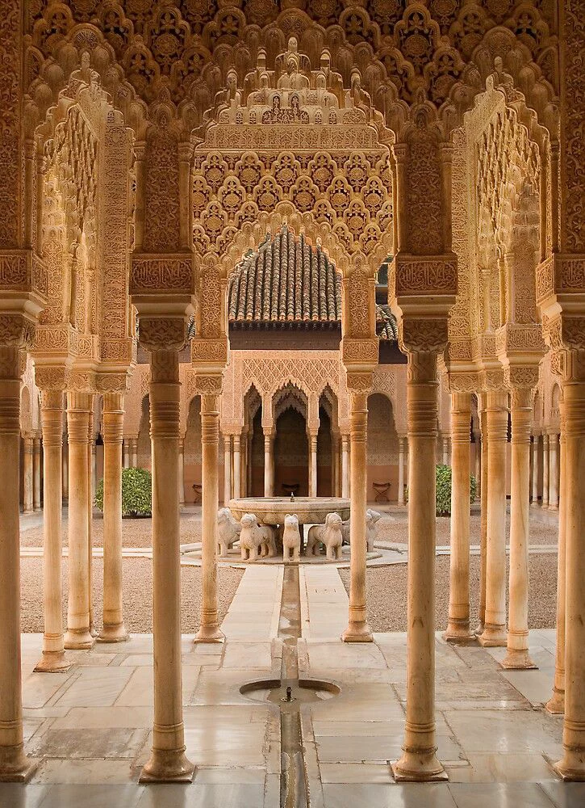
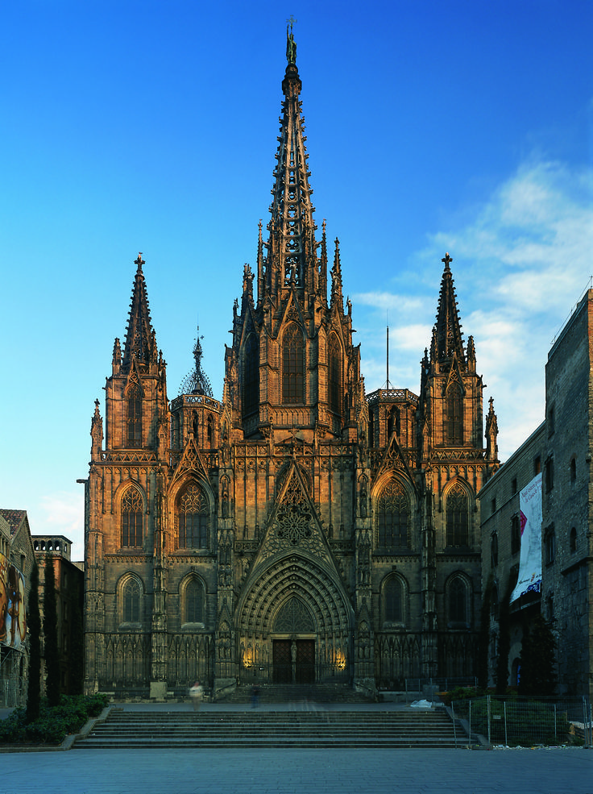

Page author: Маєвська Валерія ІМ-41
Spain is famous for its diverse architectural styles, including Gothic, Islamic, and Modernism. They are the ones we are going to focus on here. The pages dedicated to each style are listed below.
Spanish architecture is a rich blend of cultures and eras. It began with Roman and Visigoth foundations, then flourished under the Moors, who introduced intricate arches, courtyards, and decorative patterns, as seen in the Alhambra. After the Reconquista, Gothic cathedrals like the Barcelona Cathedral combined European styles with local traditions, while the Renaissance and Baroque added grandeur and ornamentation. In the 19th–20th centuries, Modernisme, led by Antoni Gaudí, brought organic shapes and imaginative designs, exemplified by the Sagrada Familia. Across Spain, architecture reflects a layering of history, culture, and regional identity, from medieval stone churches to vibrant, modernist masterpieces.
Here's the history of Spanish architecture in a nutshell:
| Spanish Architectural Styles | |||
|---|---|---|---|
| Historical Period | Architectural Style | Main Characteristics | Cultural Influence |
| Middle Ages + Islamic Rule | Romanesque | Thick walls, semicircular arches, small windows | Christian Europe |
| Gothic | Pointed arches, ribbed vaults, large stained glass windows | Medieval Christian culture | |
| Moorish | Decorative tiles, horseshoe arches, geometric ornament | Islamic / North African culture | |
| Modern Period | Renaissance | Symmetry, classical columns, balanced proportions | Italian Renaissance influence |
| Modernisme | Organic forms, colorful mosaics, artistic decoration | Catalan artistic movement | |
| Sagrada Familia | Alhambra | Barcelona Cathedral | Casa Batlló |
|---|---|---|---|
 |
 |
 |
 |
| Wikipedia | Wikipedia | Wikipedia | Wikipedia |
| Barcelona | Granada | Barcelona | Barcelona |
Here's a quick summary of the main topics:
Even though it's not one of the main attractions in this discussion, my personal favorite is Casa Batlló, which is also the work of Antoni Gaudí. I especially love its roof, because it resembles a dragon.
Go to a specific section of modernism page to read about the roof: The roof of Casa Batlló
The building that is now Casa Batlló was built in 1877, commissioned by Lluís Sala Sánchez. It was a classical building without remarkable characteristics within the eclecticism traditional by the end of the 19th century. You can read more about eclecticism here